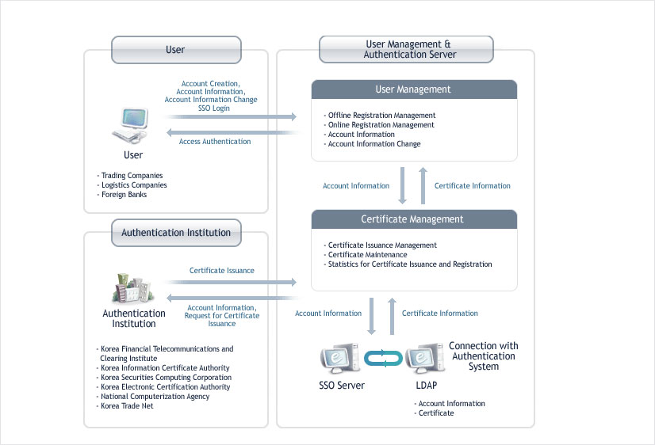

Security Authentication
The uTradeHub gives top priority to information protection and security in order to secure stable services and reliability. It acquired the ISO27001 and won the Information Security Award of the Ministry of Information and Communication by making constant efforts to enhance information security. One of the world's top information security management systems has been established and is operating under the uTradeHub..
Authentication for Information Security
- · Aug. 2006 : Acquired ISO 27001, the international information security management standard system
- · Feb. & Sep. 2007 : Passed bi-annual post-inspection
- · Feb. 2006 : Won the Information Security Award of the Ministry of Information and Communication
- · 2006 & 2007 : Passed the information security testing of the Ministry of Information and Communication
- · 2005, 2007, & 2008 : Passed the regular security testing of the National Intelligence Service
Physical System
- · Establishment of the access control system that meets the requirements of the national e-Trade service providers.
- · Two-tier entry control systems have been implemented using ID cards and the fingerprint recognition system in order to operate and manage the system of the data center.
- · Entries into the data center and system access are under 24-hour surveillance, using close-circuit TV.
Administrative Safeguards
- · A security taskforce, the top deliberation body responsible for information security, has been formed and bi-annual meetings were held to actively support information security.
Physical Safeguards
Authentication through the use of Certificates
- · Security incidents can be prevented by carrying out regular reviews of the system and applications to identify their vulnerabilities.
- · The highest level of security infrastructure will be established so as to increase the security levels of networks, systems and databases.
- · Web firewalls, transmission encryptions, secure sockets layers and encryption of databases are adopted to brace for the newest security threats.
- · The Enterprise Security Management (ESM) will be built to analyze and monitor the integrated logs from many different security systems.
- · Security through the use of Certificates
- · The user authentication system based on ID / Password and the public key infrastructure (PKI) will be established to ensure that the consolidated portal has reliability, transparency and stability. Access authentication will be granted to a limited number of authenticated users according to their grade.
